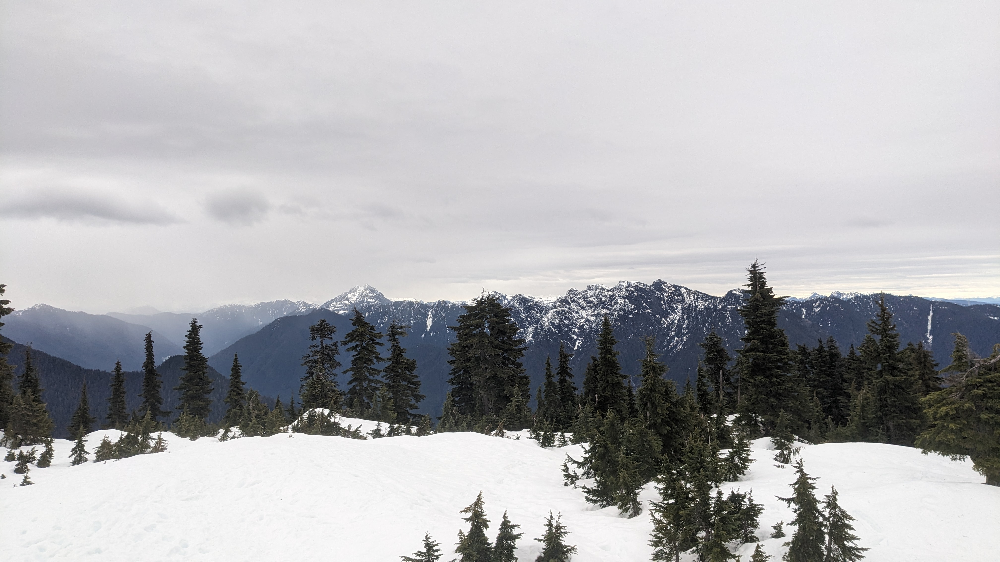
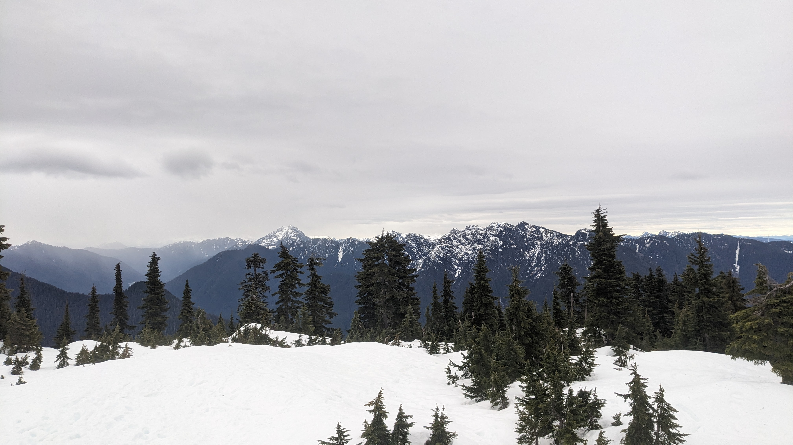

Cypress/Hollyburn Mountain
Completed on 23/12/2023
 X

X

17.5 km intermediate hike with 960 meters of elevation.
Great view at the peak of both Vancouver and the mountains.
From the High View Lookout hike up Forks Trail until Hollyburn Lodge. Use the Baden Powell Trail to reach the peak of Hollyburn Mountain (1326 m).
Public Transit Option: Take the 250 from Downtown Vancouver and switch to the 252 at Marine Dr at 25 St. Get off at Queens Ave. & 21st Street. Walk on the Mark Creek Trail until you reach the Cypress Lookout.
See In Maps